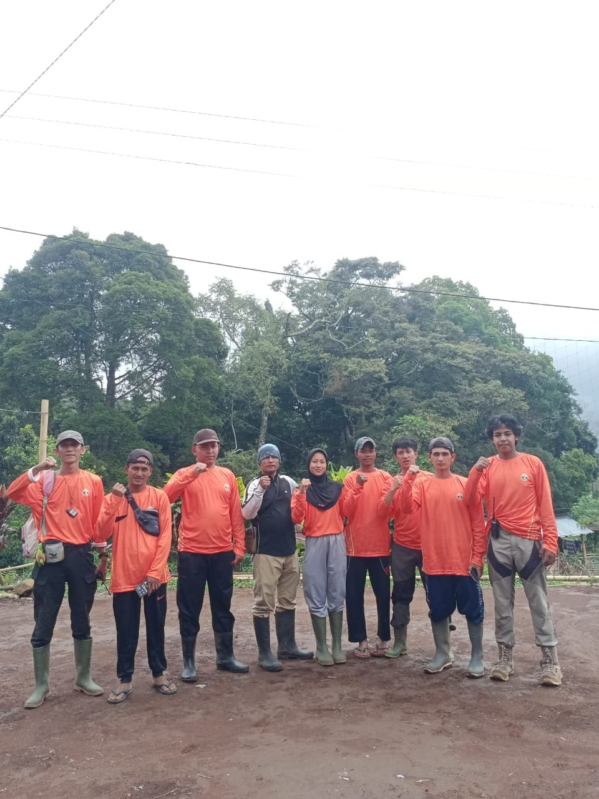

Pagar Alam, Sumatera Selatan — Federasi Mountaineering Indonesia Pengurus Provinsi Sumatera Selatan (FMI Sumsel) beserta beberapa relawan sukses melaksanakan Program Pendampingan Peningkatan Kapasitas Sumber Daya Manusia bagi masyarakat dan pemuda Dusun Talang Kubangan, Desa Bandar Jaya, Kecamatan Dempo Selatan, Kota Pagar Alam, pada tahun 2025.
Pagar Alam, South Sumatra — The South Sumatra Provincial Board of the Federasi Mountaineering Indonesia (FMI Sumsel), together with several volunteers, successfully carried out a Human Resource Capacity-Building Assistance Program for the community and youth of Talang Kubangan Hamlet, Bandar Jaya Village, Dempo Selatan District, Pagar Alam City, in 2025.
Program ini hadir sebagai wujud nyata komitmen FMI Sumsel dalam membangun serta bersinergi dengan masyarakat kawasan pegunungan agar mampu mengelola potensi alam secara profesional dan berkelanjutan. Melalui serangkaian pelatihan dan pendampingan, peserta memperoleh pembekalan komprehensif meliputi pengelolaan ekowisata berbasis masyarakat, teknik dan keselamatan pendakian, kepemanduan wisata, konservasi lingkungan, navigasi, serta pengembangan ekonomi lokal.
The program reflects FMI Sumsel's tangible commitment to building and working in synergy with mountain-area communities so they can manage their natural potential professionally and sustainably. Through a series of training sessions and mentoring, participants received comprehensive material covering community-based ecotourism management, climbing techniques and safety, tour guiding, environmental conservation, navigation, and local economic development.

Tim relawan FMI Sumsel bersama pemuda Talang Kubangan di kawasan lereng Gunung Patah.
FMI Sumsel volunteer team together with Talang Kubangan youth in the slope area of Mount Patah.
Masyarakat Talang Kubangan menyambut program ini dengan antusias. Warga mengungkapkan bahwa kegiatan ini tidak sekadar memberikan pelatihan teknis, tetapi juga menumbuhkan semangat dan kepercayaan diri untuk ikut membangun desa secara mandiri. Pemuda desa pun menyatakan kesiapannya untuk tampil lebih aktif dalam mengembangkan wisata alam berbasis pelestarian lingkungan.
The Talang Kubangan community welcomed the program enthusiastically. Residents said the activity did not merely provide technical training but also fostered the spirit and confidence to help build the village independently. The village's youth likewise expressed their readiness to take a more active role in developing nature tourism grounded in environmental preservation.
"Potensi Gunung Patah bukan hanya tentang keindahan alam, tetapi juga tentang bagaimana masyarakat lokal menjadi bagian penting dalam menjaga, mengelola, dan mengembangkannya."
"Mount Patah's potential isn't only about natural beauty, but also about how local communities become an essential part of preserving, managing, and developing it."
— Ketua FMI Sumsel (M. Taufik, S.Kom., M.Kom)
— Chair of FMI Sumsel (M. Taufik, S.Kom., M.Kom)
Dengan terselenggaranya program ini, FMI Sumsel terus memperkuat peran federasi sebagai mitra strategis masyarakat pegunungan — mewujudkan kawasan wisata alam yang ramah, aman, lestari, dan bernilai ekonomi bagi desa.
With the completion of this program, FMI Sumsel continues to strengthen the federation's role as a strategic partner for mountain communities — realizing a nature tourism area that is welcoming, safe, sustainable, and economically valuable for the village.